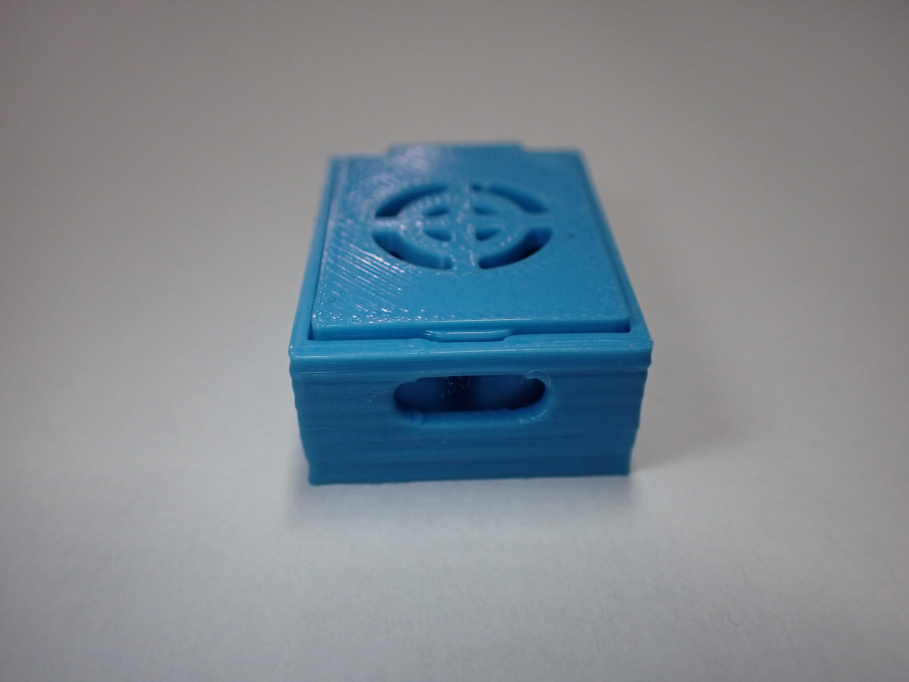
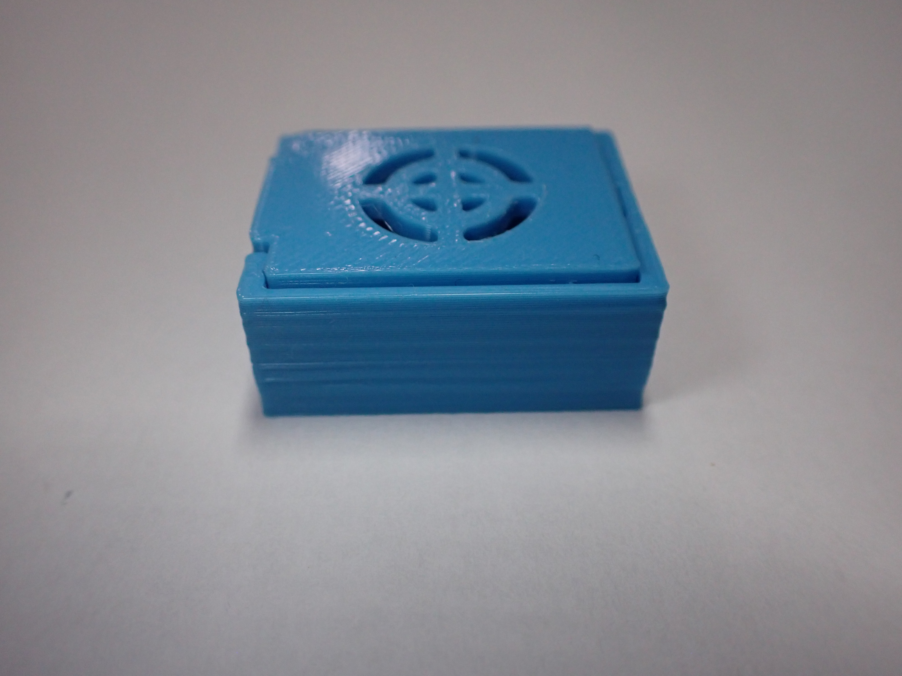
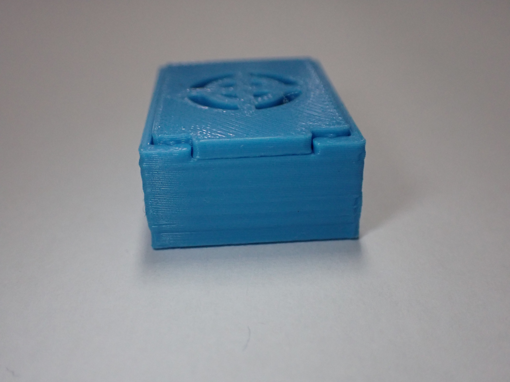
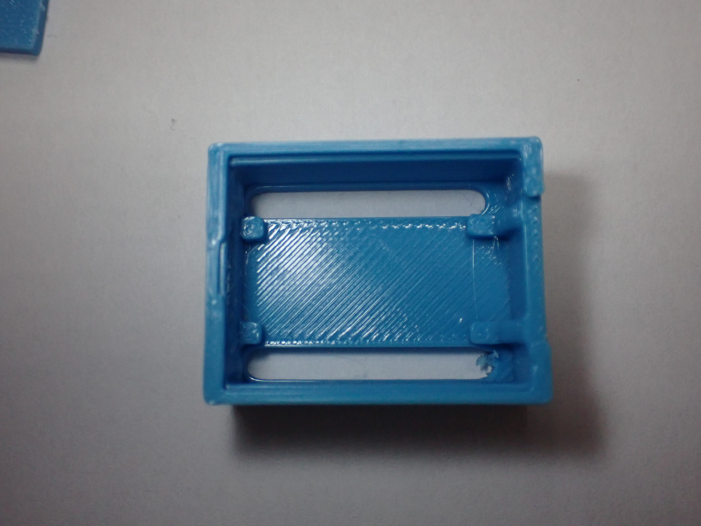
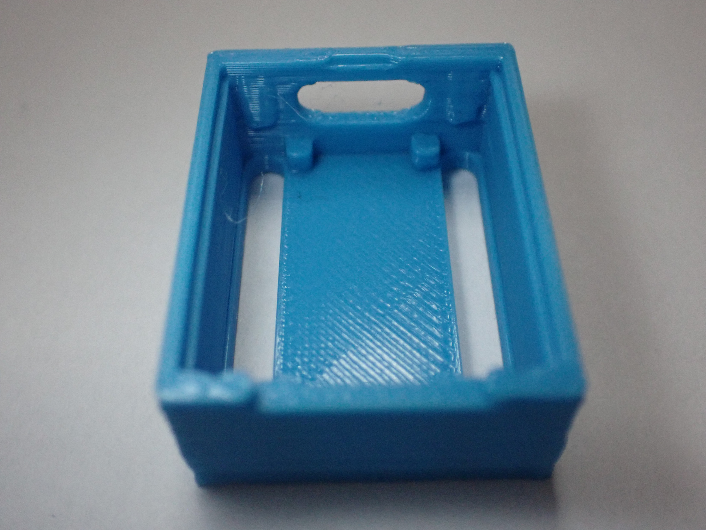
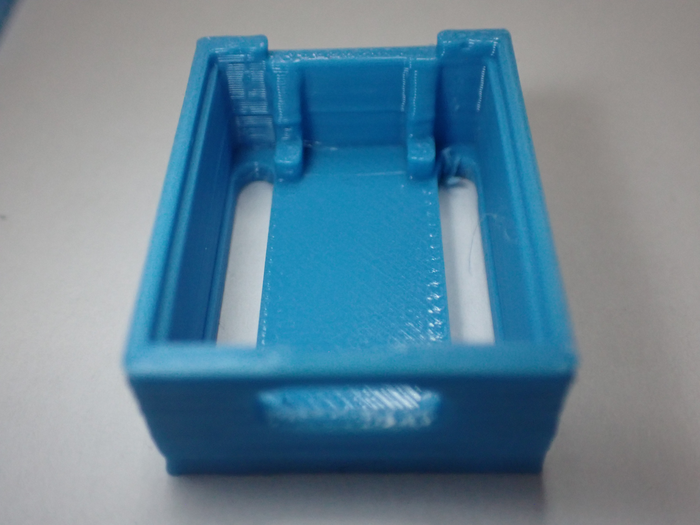

Prototipo 1
Prima iterazione della custodia stampata in 3D per ESP32C3 Zero: obiettivi di progetto, scelte di design e risultati del primo test.
Descrizione
Il primo prototipo ha come obiettivo principale la verifica delle dimensioni e dell'ingombro della custodia attorno alla scheda ESP32C3 Zero. Il modello è stato progettato in Tinkercad e stampato in PLA con una stampante BambuLab A1.
La custodia è composta da due parti: una base che accoglie la scheda e un coperchio. Sono stati previsti un'apertura per la porta USB-C, due slot laterali per i pin GPIO e due fori per i pulsanti BOOT e RST.
Vantaggi (Pros)
- Prima versione stampata con successo: struttura di base funzionante.
- Apertura USB-C inclusa fin dalla prima versione.
- Slot per i pin GPIO presenti su entrambi i lati.
- Design compatto adatto all'utilizzo in classe.
Foto








Problemi riscontrati
- La custodia era troppo corta, rendendo difficile l'inserimento della scheda nel suo alloggiamento.
- I pin della scheda toccavano il fondo della scatola perché lo slot per i pin era troppo corto.
- La ventilazione aggiunta al coperchio non raggiungeva la superficie minima richiesta.
- La stampa si è interrotta a un certo punto, impedendo alla scatola di raggiungere l'altezza prevista nel design.
Conclusioni
Il primo prototipo ha permesso di identificare i principali problemi strutturali della custodia. Nel secondo prototipo la scatola verrà allungata di 1 mm per facilitare l'inserimento della scheda, gli slot sul fondo verranno estesi, la ventilazione verrà migliorata con aperture su entrambi i lati e sul coperchio, e verranno integrati due pulsanti flessibili nel coperchio per azionare i tasti della scheda senza aprire la custodia.